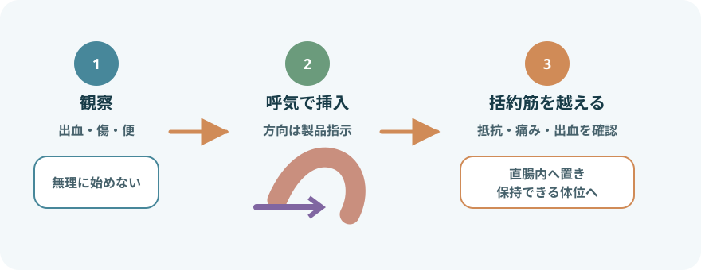

直腸内与薬を分けて考える

- 全身作用：解熱・鎮痛、抗けいれん、鎮痛薬など。投与量、投与間隔、他経路との重複を確認する
- 局所作用：直腸炎・肛門部症状など。患部への到達と保持が重要になる
- 排便促進：直腸刺激や便軟化を利用する。便の位置・硬さと急性腹症の除外が必要
液体・泡・ゲル・注腸製剤も直腸内投与に含まれるが、容器の挿入、注入量、保持方法が異なる。このページは固形坐薬の基本を扱う。
投与前に中止・確認する状態
- 原因不明の強い腹痛、腹部膨満、悪心・嘔吐、排ガス停止、急性腹症・腸閉塞の疑い
- 新しい直腸出血、強い肛門痛、裂創、潰瘍性痔核、重い直腸炎、直腸・肛門手術直後
- 好中球減少、血小板減少、粘膜障害など、挿入による感染・出血リスクが高い
- 直腸内の硬便、狭窄、抵抗があり、粘膜損傷のおそれがある
- 薬剤固有の禁忌、アレルギー、臓器障害、妊娠、併用薬の問題がある
薬剤と患者を照合する

- 患者、薬剤名・成分、規格、個数、直腸内経路、投与時刻、目的
- 前回投与時刻、1日総量、頓用条件、効果・副作用歴
- 経口薬、注射薬、市販薬を含む同一成分の重複
- 年齢・体重、肝腎機能、呼吸・意識、アレルギー、妊娠
- 最終排便、便意、下痢、肛門・直腸症状、すぐ排便する可能性
- 保管状態、期限、包装破損、軟化・変形、必要時の分割指示
坐薬を分割してよいとは限らない。含量の均一性や切り方、残薬の保存が製品で異なるため、処方・薬剤師の指示なしに切らない。
必要物品と準備
- 指示された坐薬
- 非滅菌手袋、必要時エプロン
- 製品で使用可能な水溶性潤滑剤または水
- 防水シート、ティッシュ・清拭用品
- 廃棄物袋
- 必要時、便器・ポータブルトイレ・おむつ
- 効果・副作用を測る体温計、血圧計、パルスオキシメータなど
- 説明して同意を得る
目的、方法、予想される感覚、投与後の体位とナースコールを説明する。羞恥心と過去のつらい経験へ配慮する。
- 排泄と投与の順番を決める
排便促進薬以外では、便意があれば先に排便できるか確認する。複数の坐薬は投与順と間隔を確認する。
- プライバシーと体位を整える
左側臥位を基本に上側の膝を軽く曲げる。小児や体位制限では安全で無理のない姿勢に調整する。
坐薬投与の手順

- 手指衛生と最終照合
投与直前に患者、薬剤、規格、個数、時刻、経路を再確認し、手袋を着ける。
- 肛門周囲を観察する
皮膚障害、出血、裂創、痔核、便の付着を確認する。必要性のない直腸診は行わない。
- 包装を外し、必要時に潤滑する
坐薬を汚染しないよう取り出す。潤滑剤の可否と種類は電子添文・製品指示に従う。油性剤を自己判断で使わない。
- 方向を確認する
先端側・太い側のどちらから入れるかは製品指示を確認する。薬剤が違えば挿入方向も同じとは限らない。
- 呼気に合わせてゆっくり挿入する
臀部を開き、肛門の方向へ沿わせ、括約筋を越える位置まで進める。強い抵抗、鋭い痛み、出血があれば中止する。
- 保持できるよう整える
臀部を戻し、必要時は短時間軽く合わせる。薬剤に必要な時間、安楽な体位を保つが、強い苦痛を我慢させない。
- 片づけ、手指衛生、再評価
包装と手袋を廃棄し、患者を整える。投与時刻、排出の有無、直後の症状を確認する。
坐薬が出た・排便したとき
自動的にもう1個入れない
- 直後に未変形の坐薬が確認できた：製品指示と処方を確認し、再投与の可否を医師・薬剤師へ相談する
- 一部溶けた、便中に見えない、時間が不明：吸収量を判断できないため、追加投与しないで確認する
- 下痢・頻回便が続く：効果が得られない可能性と脱水、薬剤副作用を評価する
- 排便促進坐薬：便意と排便は期待する作用。便量・性状、腹痛、出血、気分不良を観察する
薬剤によって変わる重要点
アセトアミノフェン坐剤
小児では体重から1回量と1日総量を確認。内服・注射・市販薬を含むアセトアミノフェン重複を避ける。体温や疼痛だけでなく、発疹、呼吸、意識、肝障害の兆候を観察する。
ビサコジル坐薬
急性腹症、痙攣性便秘、重い硬結便、肛門裂創・潰瘍性痔核では投与しない。腹痛、直腸刺激、出血、顔色、冷汗、血圧低下を観察する。
ジアゼパム坐剤
指示された発作・発熱条件、体重、前回時刻を確認。投与後は眠気、ふらつき、呼吸数・深さ、SpO₂、意識を観察する。アセトアミノフェン坐剤との併用は、投与順と間隔を指示どおりにする。
ジクロフェナク坐剤
NSAIDsの禁忌・相互作用は直腸投与でも消えない。消化管潰瘍、血液・肝腎・心機能、アスピリン喘息、妊娠、併用薬を確認し、過度の体温低下、血圧低下、喘息、消化管出血などを観察する。
複数の坐薬を使うとき
- 薬剤の基剤が他剤の溶解・吸収へ影響することがある
- ジアゼパム坐剤とアセトアミノフェン坐剤では、一般にジアゼパムを先に投与し、30分以上あける指示が用いられる
- 一律の順番ではなく、処方、患者向け説明書、薬剤師の指示を確認する
- 投与時刻をそれぞれ記録し、誰が次の薬を投与するか申し送る
投与後の観察
- 共通：坐薬の排出、肛門痛・出血、腹痛、悪心、発疹、呼吸・循環・意識
- 解熱鎮痛：体温、疼痛、活動性、水分摂取。体温だけを下げる目的で過量にしない
- 抗けいれん：発作、意識、眠気、呼吸抑制、ふらつき・転倒
- 排便促進：効果発現までの時間、便量・性状、腹痛、下痢、残便感、血圧変動
- 局所治療：保持できた時間、症状、出血・粘液、刺激感
報告・記録
- 薬剤名、規格、個数、経路、投与時刻、投与目的
- 投与前の症状、体温・疼痛・発作・排便状況、肛門直腸所見
- 体位、挿入の難易度、痛み・抵抗・出血、保持・排出状況
- 効果発現時刻、効果、副作用、排便量・性状
- 複数坐薬の順番と間隔、再投与判断、報告先、対応